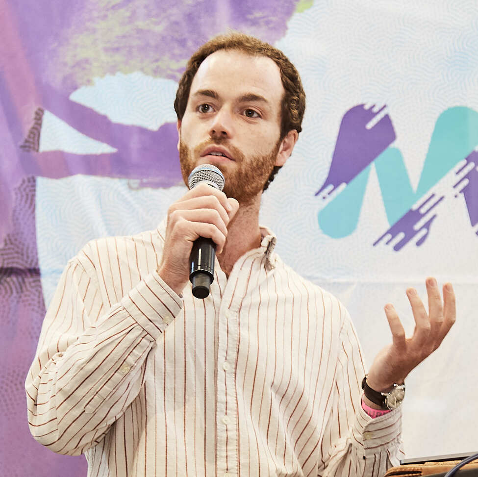

Postdoctoral Research Fellow in the Department of Astrophysics of CEA Paris-Saclay, Laboratoire de Dynamique des Étoiles, des Exoplanètes et de leur Environnement (LDE3).

Arthur Le Saux is specialized in astrophysical fluid dynamics, with a focus on transport processes, waves, and convection in stellar interiors and planetary atmospheres. His research combines nonlinear numerical simulations with theoretical modelling to better understand the internal dynamics of all kinds of star, from low- to high-mass and from the main sequence to the asymptotic giant branch, as well as the circulation of ice giant planets such as Neptune and Uranus. He is particularly interested in bridging stellar hydrodynamical simulations with asteroseismology, using global stellar oscillations to constrain and validate stellar models. He contributes both as a developer and user of the fully compressible, time-implicit MUSIC code for solving the (magneto-)hydrodynamic equations. He is currently a Postdoctoral Research Fellow at CEA Paris-Saclay, following previous research position at LMD/IPSL and a PhD from the University of Exeter.
Here are selected recent papers. For a full list, see my ADS profile or Google Scholar.
Email: arthur.lesaux .at. cea.fr
Affiliation: Astrophysique, Instrumentation, Modélisation (AIM), Department of Astrophysique, CEA Paris-Saclay